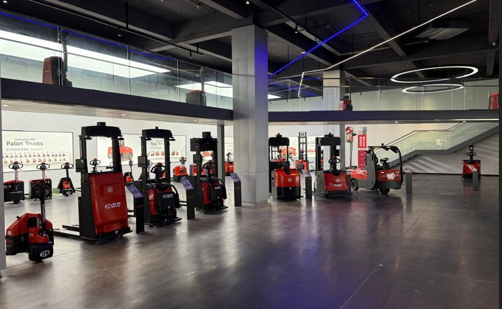
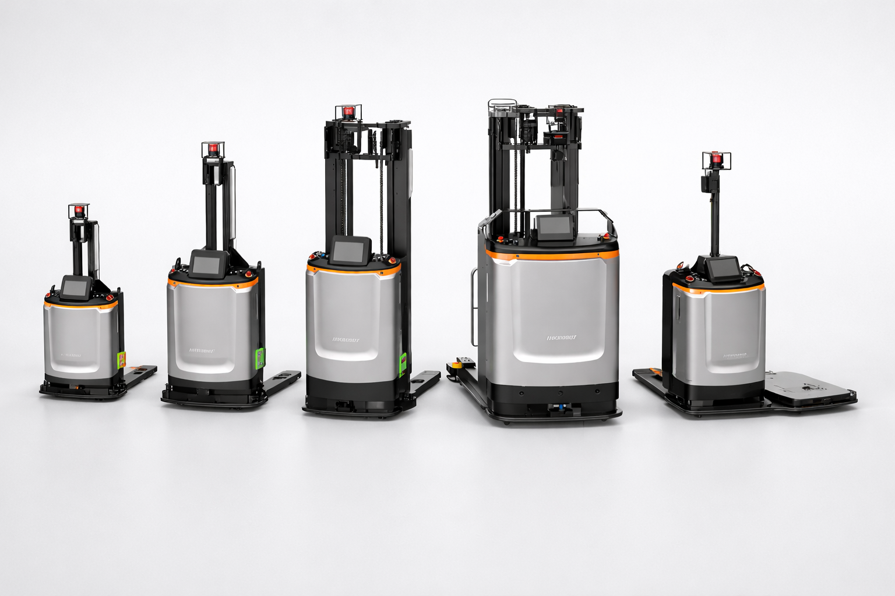
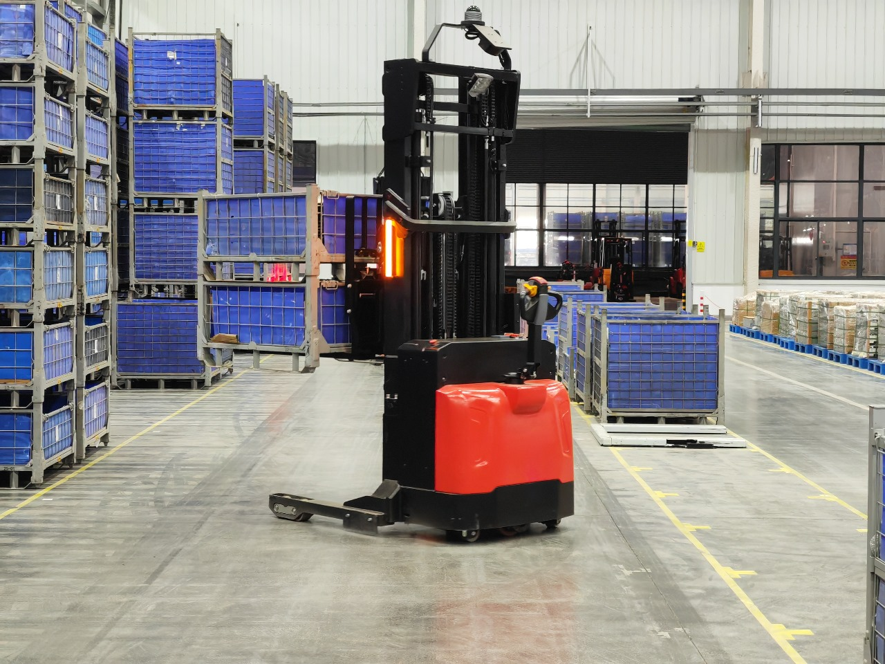
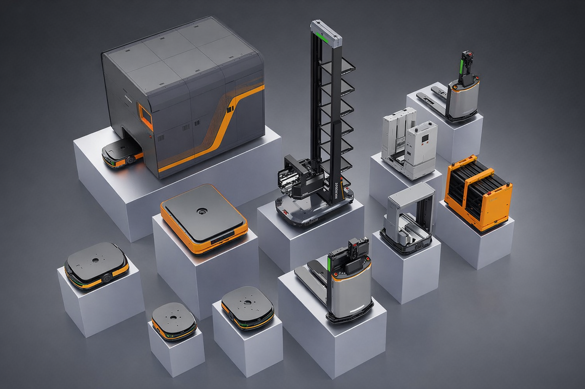

Мы можем дооснастить уже работающую технику при технической совместимости и состоянии оборудования. Это снижает порог входа и позволяет начать без закупки новой техники. Мы постоянно увеличиваем модельный ряд известной нам техники.
Техника
Какая техника автоматизируется
Дооснащаем вилочные погрузчики, ричтраки, штабелёры, паллетоперевозчики и технику заказчика комплектом беспилотности. Старт с одной единицы, далее — масштабирование на парк.
Техника заказчика

Автоматизация парка
старт с 1–2 единиц техники;
поэтапное подключение новых машин и маршрутов;
масштабирование на несколько площадок.
Вилочные погрузчики

Беспилотные вилочные погрузчики подходят для перемещения палет в зонах приёмки, отгрузки и буферного хранения. Основной эффект — повторяемость маршрутов и снижение зависимости от водителей.
- типовые маршруты «рампа — буфер» и обратно;
- работа в цикле с конвейерами и воротами;
- перемещение палет между зонами склада.
Для каких задач
массовые повторяемые перемещения палет;
снижение простоев техники;
стабильная производительность смены.
Высотные Ричтраки

Автоматизация ричтраков актуальна для стеллажных зон и работы на высоте, где важно сочетание точности позиционирования и безопасности.
Особенности дооснащения
учёт габаритов и динамики на высоте;
настройка ограничений по коридорам и высоте подъёма;
дополнительные сценарии безопасности.
Штабелёры

Штабелёры используются для работы в зонах отбора и локального хранения, где особенно ценна автоматизация повторяющихся коротких маршрутов.
Задачи автоматизации
обслуживание стеллажей в зоне отбора;
циклические маршруты между буферами;
подвоз / вывоз палет к зонам комплектации.
AGV тележки

Паллетоперевозчики и AGV тележки — основной инструмент внутрипроизводственной логистики: подвоз к линиям, перемещение между цехами, вывоз готовой продукции.
Где особенно эффективны
повторяемые участки маршрутов между зонами;
круговые маршруты по цеху;
обслуживание линий и конвейеров.
Обсудить технику и получить расчёт
Свяжитесь с нами или оставьте заявку на расчёт под ваш склад.